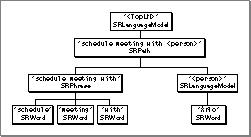

Legacy Document
Important: The information in this document is obsolete and should not be used for new development.
Important: The information in this document is obsolete and should not be used for new development.


Interpreting Recognition Results
A recognition result contains information about a recognized utterance. The standard way to determine what the user said is to read the language model format property of the recognition result. The value of this property is a language model that contains a copy of each word, phrase, path, and language model used in the recognized utterance. You can inspect that language model to determine precisely what the user said and then respond accordingly. To retrieve this language model, callSRGetProperty, as follows:
SRLanguageModel myResultLM; Size myLen; myLen = sizeof(myResultLM); myErr = SRGetProperty(recResult, kSRLanguageModelFormat, &myResultLM, &myLen);The language model returned bySRGetPropertyis a subset of the complete active language model. For instance, the language model returned for the utterance "schedule meeting with Arlo" has the structure shown in Figure 1-7. This is a subset of the language model shown in Figure 1-3 on page 1-12.Figure 1-7 A language model for a recognized utterance

You can traverse this language model starting from its root by calling
SRCountItemsandSRGetIndexedItem. Then, for any item returned, you can inspect its type and reference constant to identify it. TheMyProcessRecognitionResultfunction defined in Listing 1-17 shows how to process recognition results for the sample language model built in Listing 1-5 on page 1-19.Listing 1-17 Handling a recognition result
void MyProcessRecognitionResult (SRRecognitionResult recResult) { OSErr myErr = noErr; if (recResult) { SRLanguageModel myResultLM; Size myLen; myLen = sizeof(myResultLM); myErr = SRGetProperty(recResult, kSRLanguageModelFormat, &myResultLM, &myLen); if (!myErr) { long myRefCon; SRLanguageObjectmySubElement; myLen = sizeof(myRefCon); myErr = SRGetProperty(myResultLM, kSRRefCon, &myRefCon, &myLen); /* if it's a valid result from our top-level LM, */ /* then parse and process its elements */ if (!myErr) { switch (myRefCon) { case kRejectedWordRefCon: /* do nothing, if utterance was rejected */ break; case kTopLMRefCon: /* parse and process element of top-level LM */ /* get the first sub-element (here there is only one) */ myErr = SRGetIndexedItem(myResultLM, &mySubElement, 0); if (!myErr) { myLen = sizeof(myRefCon); myErr = SRGetProperty(mySubElement, kSRRefCon, &myRefCon, &myLen); if (!myErr) { if (myRefCon == kCallPersonRefCon) myErr = MyCallPersonInPath((SRPath) mySubElement); /* process other possible subelements here */ } } /* release subelement when done with it */ myErr = SRReleaseObject(mySubElement); break; } } /* release myResultLM fetched above when done with it */ myErr = SRReleaseObject(myResultLM); } /* Release SRRecognitionResult because we are done with it. */ myErr = SRReleaseObject(recResult); } }WhenMyHandleRecognitionResultdetermines that the first item in the language model is an object whose reference constant iskCallPersonRefCon, it dispatches to the application-defined functionMyCallPersonInPath, defined in Listing 1-18, which continues parsing the language model to determine whom to call.Listing 1-18 Calling a name in a path
const char *kPhoneNumbers[] = {"555-4567", "555-4568", "555-4569", "(123) 456-7890", NULL}; OSErr MyCallPersonInPath (SRPath recognizedPath) { OSErr myErr = noErr; SRLanguageObject myPersonLM; /* recognizedPath has two sub-elements: */ /* "<call>" (SRLanguageModel) and "<person>" (SRLanguageModel) */ /* Here we get the second sub-element. */ myErr = SRGetIndexedItem(recognizedPath, &myPersonLM, 1); if (!myErr) { SRLanguageObjectmyPhraseSpoken; /* myPersonLM has one sub-element, the name (a phrase) */ myErr = SRGetIndexedItem(myPersonLM, &myPhraseSpoken, 0); if (!myErr) { long myRefCon; Size myLen = sizeof(myRefCon); /* When we built the language model, we set the refcon to the index */ /* of names in a list. The phone numbers in kPhoneNumbers correspond */ /* to those names */ myErr = SRGetProperty(myPhraseSpoken, kSRRefCon, &myRefCon, &myLen); if (!myErr) { short myArrayIndex = myRefCon; printf("Now calling %s. Dialing %s.\n", kPersonNames[myArrayIndex], kPhoneNumbers[myArrayIndex]); } /* release myPhraseSpoken when done with it */ myErr = SRReleaseObject(myPhraseSpoken); } /* release myPersonLM when done with it */ myErr = SRReleaseObject(myPersonLM); } return myErr; }Note that bothMyProcessRecognitionResultandMyCallPersonInPathare careful to release any language object references when they are no longer needed.